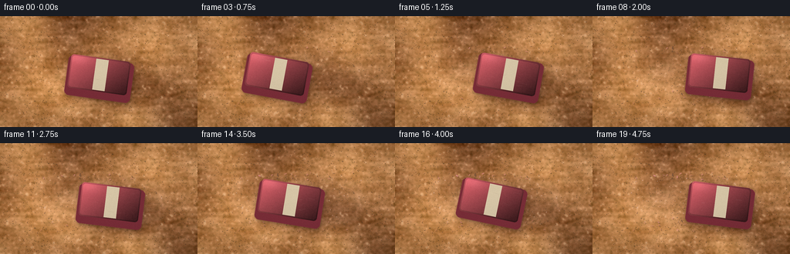
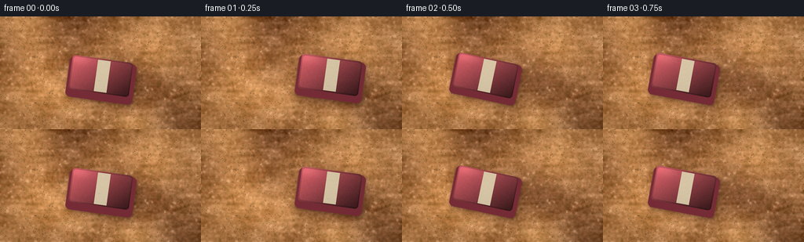
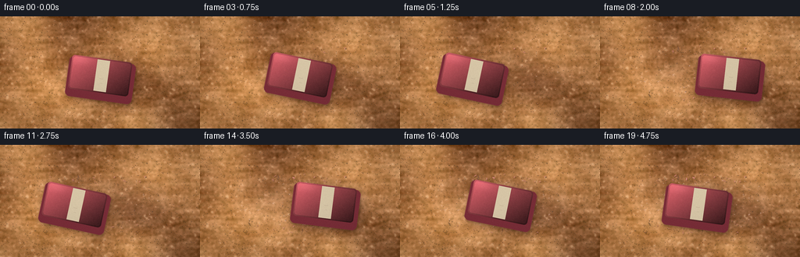
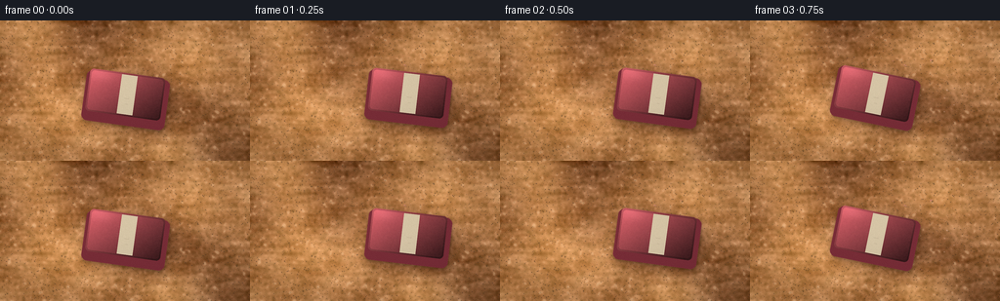

CODING AGENTS AS PIXEL WORLD MODELS
traex/DeepSeek-V4.1-Flash · material_0016
点击播放 · 原生 RGB 像素
逐轮保存的候选
回放视频、检查图与代码变化。
每份候选均可单独播放。实际图片检查记录在下方工具轨迹中。
候选 01播放与检查图
点击播放 · 原生 RGB 像素


展开代码变化
--- 上一保存版本
+++ 本次保存版本
@@ -0,0 +1,399 @@
+from pathlib import Path
+
+import numpy as np
+from PIL import Image, ImageDraw, ImageFilter, ImageFont
+from scipy.ndimage import gaussian_filter
+
+import artifact_io
+
+
+W, H = 256, 144
+N, FPS = 20, 4.0
+SS = 3
+RW, RH = W * SS, H * SS
+RNG = np.random.default_rng(20261111)
+
+
+def normalize(field):
+ field = field.astype(np.float32)
+ return (field - field.mean()) / (field.std() + 1e-6)
+
+
+def make_sandpaper():
+ yy, xx = np.mgrid[0:H, 0:W].astype(np.float32)
+ xn, yn = xx / (W - 1), yy / (H - 1)
+
+ base = np.empty((H, W, 3), np.float32)
+ base[..., 0] = 0.69
+ base[..., 1] = 0.47
+ base[..., 2] = 0.28
+
+ low = normalize(gaussian_filter(RNG.normal(size=(H, W)), 22))
+ medium = normalize(gaussian_filter(RNG.normal(size=(H, W)), 6))
+ fine = normalize(gaussian_filter(RNG.normal(size=(H, W)), 1.15))
+ micro = normalize(RNG.normal(size=(H, W)))
+ directional = normalize(gaussian_filter(RNG.normal(size=(H, W)), (1.2, 8.0)))
+
+ shade = 0.055 * low + 0.030 * medium + 0.027 * fine + 0.020 * directional
+ base += shade[..., None]
+ base[..., 0] += 0.022 * low + 0.010 * fine
+ base[..., 1] += 0.009 * low
+ base[..., 2] -= 0.015 * low
+
+ # Tiny mineral grit: dark granules, pale quartz-like flecks, and soft dust.
+ dark = np.clip((micro - 1.22) * 0.34, 0.0, 0.48)
+ pale = np.clip((fine - 1.55) * 0.28, 0.0, 0.34)
+ base = base * (1.0 - dark[..., None]) + np.array([0.24, 0.18, 0.12]) * dark[..., None]
+ base = base * (1.0 - pale[..., None]) + np.array([0.89, 0.77, 0.59]) * pale[..., None]
+
+ # Fine paper fibers and shallow directional grain.
+ fibers = np.clip((directional - 0.72) * 0.12, 0.0, 0.10)
+ base += fibers[..., None] * np.array([0.08, 0.06, 0.035])
+
+ warm_pool = 0.035 * (1.0 - 0.72 * xn - 0.30 * yn)
+ base += warm_pool[..., None] * np.array([0.22, 0.11, 0.025])
+ return np.clip(base, 0.0, 1.0)
+
+
+BASE_SAND = make_sandpaper()
+
+
+def eraser_patch(angle_deg, squash, side_depth, scuff_seed):
+ eraser_w, eraser_h = 84.0, 51.0
+ pad = 25.0
+ pw = int(round((eraser_w + 2 * pad) * SS))
+ ph = int(round((eraser_h + 2 * pad) * SS))
+ cx, cy = pw * 0.5, ph * 0.5 - 1.0 * SS
+ ww, hh = eraser_w * SS, eraser_h * SS * squash
+ radius = 6.0 * SS
+
+ def rr_mask(dx=0.0, dy=0.0, grow=0.0, radius_extra=0.0):
+ layer = Image.new("L", (pw, ph), 0)
+ draw = ImageDraw.Draw(layer)
+ box = (
+ cx - ww / 2 - grow + dx,
+ cy - hh / 2 - grow + dy,
+ cx + ww / 2 + grow + dx,
+ cy + hh / 2 + grow + dy,
+ )
+ draw.rounded_rectangle(box, radius=radius + radius_extra, fill=255)
+ return np.asarray(layer, np.float32) / 255.0
+
+ outer = rr_mask()
+ side = rr_mask(dx=1.2 * SS, dy=side_depth * SS, grow=0.7 * SS)
+ bevel_inner = rr_mask(grow=-3.2 * SS, radius_extra=-2.0 * SS)
+ face = rr_mask(grow=-5.1 * SS, radius_extra=-3.0 * SS)
+ top_shift = rr_mask(dx=-1.5 * SS, dy=-1.6 * SS, grow=-0.3 * SS)
+ bottom_shift = rr_mask(dx=1.7 * SS, dy=1.9 * SS, grow=-0.3 * SS)
+
+ yy, xx = np.mgrid[0:ph, 0:pw].astype(np.float32)
+ xnorm = np.clip((xx - (cx - ww / 2)) / ww, 0.0, 1.0)
+ ynorm = np.clip((yy - (cy - hh / 2)) / hh, 0.0, 1.0)
+ light = np.clip(1.08 - 0.52 * xnorm - 0.36 * ynorm, 0.30, 1.05)
+ sheen = np.exp(-((xnorm - 0.17) ** 2 / 0.025 + (ynorm - 0.15) ** 2 / 0.018))
+
+ pink = np.empty((ph, pw, 3), np.float32)
+ pink[..., 0] = 0.86 * light + 0.075 * sheen
+ pink[..., 1] = 0.39 * light + 0.055 * sheen
+ pink[..., 2] = 0.43 * light + 0.060 * sheen
+
+ rubber_noise = normalize(gaussian_filter(RNG.normal(size=(ph, pw)), 1.5))
+ rubber_noise = 0.5 * rubber_noise + 0.5 * normalize(RNG.normal(size=(ph, pw)))
+ pink += rubber_noise[..., None] * np.array([0.012, 0.006, 0.006])
+
+ # Worn, slightly chalky edge bevel.
+ bevel_ring = np.clip(bevel_inner - face, 0.0, 1.0)
+ pink *= 1.0 - 0.17 * bevel_ring[..., None]
+ pink += (top_shift - bottom_shift)[..., None] * np.array([0.13, 0.085, 0.075])
+
+ img = np.zeros((ph, pw, 4), np.float32)
+ side_color = np.array([0.47, 0.18, 0.22], np.float32)
+ img[..., :3] = side_color
+ img[..., 3] = side
+
+ # The inner face carries the rubber gradient; the thin bevel stays visible.
+ face_rgb = pink
+ img[..., :3] = img[..., :3] * (1.0 - bevel_inner[..., None]) + face_rgb * bevel_inner[..., None]
+ img[..., 3] = np.maximum(img[..., 3], bevel_inner)
+
+ # A narrow, worn paper sleeve makes the object immediately legible as an eraser.
+ sleeve_center = cx + 2.0 * SS
+ sleeve_half = 8.0 * SS
+ sleeve = np.zeros((ph, pw), np.float32)
+ sleeve_layer = Image.new("L", (pw, ph), 0)
+ draw = ImageDraw.Draw(sleeve_layer)
+ draw.rounded_rectangle(
+ (sleeve_center - sleeve_half, cy - hh * 0.55, sleeve_center + sleeve_half, cy + hh * 0.55),
+ radius=2.0 * SS,
+ fill=255,
+ )
+ sleeve = np.asarray(sleeve_layer, np.float32) / 255.0
+ sleeve *= face
+ sleeve_noise = 0.5 + 0.5 * np.clip(normalize(gaussian_filter(RNG.normal(size=(ph, pw)), 1.1)) * 0.12 + 0.5, 0.0, 1.0)
+ paper = np.empty((ph, pw, 3), np.float32)
+ paper[..., 0] = 0.84
+ paper[..., 1] = 0.78
+ paper[..., 2] = 0.67
+ paper *= (0.93 + 0.07 * sleeve_noise)[..., None]
+ paper += (0.92 - ynorm)[..., None] * np.array([0.018, 0.015, 0.010])
+ img[..., :3] = img[..., :3] * (1.0 - sleeve[..., None]) + paper * sleeve[..., None]
+
+ # Fine scuffs and grit pressed into the rubber.
+ rng = np.random.default_rng(scuff_seed)
+ scuffs = Image.new("RGBA", (pw, ph), (0, 0, 0, 0))
+ sd = ImageDraw.Draw(scuffs)
+ for _ in range(10):
+ x0 = rng.uniform(cx - ww * 0.36, cx + ww * 0.33)
+ y0 = rng.uniform(cy - hh * 0.34, cy + hh * 0.34)
+ length = rng.uniform(2.0, 8.0) * SS
+ slope = rng.uniform(-0.22, 0.22)
+ alpha = int(rng.uniform(10, 28))
+ color = (65, 42, 38, alpha) if rng.random() < 0.55 else (255, 218, 211, alpha)
+ sd.line((x0, y0, x0 + length, y0 + slope * length), fill=color, width=max(1, int(SS * 0.7)))
+ scuff_arr = np.asarray(scuffs, np.float32) / 255.0
+ scuff_alpha = scuff_arr[..., 3] * face
+ img[..., :3] = img[..., :3] * (1.0 - scuff_alpha[..., None]) + scuff_arr[..., :3] * scuff_alpha[..., None]
+
+ patch = Image.fromarray(np.clip(img * 255.0, 0, 255).astype(np.uint8), "RGBA")
+ patch = patch.rotate(angle_deg, resample=Image.Resampling.BICUBIC, expand=False)
+ return np.asarray(patch, np.float32) / 255.0, (pw, ph)
+
+
+def motion(t):
+ # Slightly irregular hand scrubbing, about 1.25 back-and-forth cycles.
+ phase = 2.0 * np.pi * 1.12 * t + 0.28 * np.sin(2.0 * np.pi * 0.34 * t)
+ x = 128.0 + 38.0 * np.sin(phase)
+ y = 76.0 + 1.5 * np.sin(2.0 * np.pi * 1.9 * t + 0.5)
+ angle = -9.5 + 3.0 * np.sin(phase + 0.55) + 0.7 * np.sin(2.0 * np.pi * 2.2 * t)
+ squash = 1.0 - 0.015 * (0.5 + 0.5 * np.sin(phase + 1.2))
+ side_depth = 4.7 + 1.0 * (0.5 + 0.5 * np.cos(phase))
+ return x, y, angle, squash, side_depth
+
+
+def paste_rgba(canvas, patch, center):
+ ph, pw = patch.shape[:2]
+ x0 = int(round(center[0] - pw / 2))
+ y0 = int(round(center[1] - ph / 2))
+ x1, y1 = x0 + pw, y0 + ph
+ sx0, sy0 = max(0, -x0), max(0, -y0)
+ dx0, dy0 = max(0, x0), max(0, y0)
+ dx1, dy1 = min(canvas.shape[1], x1), min(canvas.shape[0], y1)
+ if dx1 <= dx0 or dy1 <= dy0:
+ return
+ src = patch[sy0:sy0 + dy1 - dy0, sx0:sx0 + dx1 - dx0]
+ alpha = src[..., 3:4]
+ canvas[dy0:dy1, dx0:dx1] = canvas[dy0:dy1, dx0:dx1] * (1.0 - alpha) + src[..., :3] * alpha
+
+
+def mask_patch_to_canvas(mask_patch, center, shape):
+ out = np.zeros(shape, np.float32)
+ ph, pw = mask_patch.shape
+ x0 = int(round(center[0] - pw / 2))
+ y0 = int(round(center[1] - ph / 2))
+ x1, y1 = x0 + pw, y0 + ph
+ sx0, sy0 = max(0, -x0), max(0, -y0)
+ dx0, dy0 = max(0, x0), max(0, y0)
+ dx1, dy1 = min(shape[1], x1), min(shape[0], y1)
+ if dx1 > dx0 and dy1 > dy0:
+ out[dy0:dy1, dx0:dx1] = mask_patch[sy0:sy0 + dy1 - dy0, sx0:sx0 + dx1 - dx0]
+ return out
+
+
+def build_debris():
+ rng = np.random.default_rng(717)
+ crumbs = []
+ for i in range(58):
+ t_spawn = 0.16 + 4.55 * (i / 57.0) ** 0.83
+ xc, yc, _, _, _ = motion(t_spawn)
+ side = -1.0 if i % 2 == 0 else 1.0
+ x = xc + rng.uniform(-46.0, 46.0)
+ y = yc + side * rng.uniform(24.0, 38.0) + rng.uniform(-2.0, 2.0)
+ size = rng.uniform(0.45, 1.55)
+ angle = rng.uniform(-1.7, 1.7)
+ curl = rng.uniform(-0.8, 0.8)
+ tone = rng.uniform(0.0, 1.0)
+ crumbs.append((t_spawn, x, y, size, angle, curl, tone))
+
+ dust = []
+ for i in range(115):
+ t_spawn = 0.10 + 4.7 * (i / 114.0) ** 0.92
+ xc, yc, _, _, _ = motion(t_spawn)
+ dust.append(
+ (
+ t_spawn,
+ xc + rng.uniform(-52.0, 52.0),
+ yc + rng.uniform(-30.0, 30.0),
+ rng.uniform(0.28, 0.78),
+ rng.uniform(0.0, 1.0),
+ )
+ )
+ return crumbs, dust
+
+
+CRUMBS, DUST = build_debris()
+
+
+def add_track_and_marks(frame, t):
+ x_now, y_now, _, _, _ = motion(t)
+ hist_t = np.linspace(0.0, t, max(2, int(t * 24) + 2))
+ hist_x = np.array([motion(v)[0] for v in hist_t])
+ hist_y = np.array([motion(v)[1] for v in hist_t])
+ x_lo = max(11.0, hist_x.min() - 47.0)
+ x_hi = min(W - 11.0, hist_x.max() + 47.0)
+ y_lo = max(12.0, hist_y.min() - 31.0)
+ y_hi = min(H - 12.0, hist_y.max() + 31.0)
+
+ mask_img = Image.new("L", (RW, RH), 0)
+ draw = ImageDraw.Draw(mask_img)
+ draw.rounded_rectangle(
+ (x_lo * SS, y_lo * SS, x_hi * SS, y_hi * SS),
+ radius=24 * SS,
+ fill=255,
+ )
+ mask = np.asarray(mask_img, np.float32) / 255.0
+ mask = gaussian_filter(mask, 2.6 * SS)
+ irregular = 0.70 + 0.30 * np.clip(
+ 0.5 + 0.25 * normalize(gaussian_filter(RNG.normal(size=(RH, RW)), (4 * SS, 17 * SS))),
+ 0.0,
+ 1.0,
+ )
+ mask *= irregular
+
+ contact = Image.new("L", (RW, RH), 0)
+ cd = ImageDraw.Draw(contact)
+ cd.ellipse(
+ ((x_now - 43) * SS, (y_now - 22) * SS, (x_now + 43) * SS, (y_now + 22) * SS),
+ fill=255,
+ )
+ contact = np.asarray(contact, np.float32) / 255.0
+ contact = gaussian_filter(contact, 4.0 * SS)
+
+ strength = min(1.0, 0.30 + t * 0.22)
+ residue_alpha = np.clip((0.105 * mask + 0.105 * contact) * strength, 0.0, 0.22)
+ residue_color = np.array([0.86, 0.72, 0.67], np.float32)
+ frame[:] = frame * (1.0 - residue_alpha[..., None]) + residue_color * residue_alpha[..., None]
+
+ # Directional burnishing streaks in the scrubbed band.
+ streak_layer = Image.new("RGBA", (RW, RH), (0, 0, 0, 0))
+ sd = ImageDraw.Draw(streak_layer)
+ rng = np.random.default_rng(191)
+ for _ in range(28):
+ yy = rng.uniform(y_lo + 5, y_hi - 5) * SS
+ xx0 = rng.uniform(x_lo, x_hi - 16) * SS
+ xx1 = xx0 + rng.uniform(12, 70) * SS
+ if rng.random() < 0.64:
+ color = (236, 215, 198, int(rng.uniform(7, 17)))
+ else:
+ color = (91, 57, 37, int(rng.uniform(5, 12)))
+ sd.line((xx0, yy, xx1, yy + rng.uniform(-1.5, 1.5) * SS), fill=color, width=max(1, int(rng.uniform(0.5, 1.2) * SS)))
+ streaks = np.asarray(streak_layer, np.float32) / 255.0
+ streaks[..., 3] *= mask * min(1.0, 0.35 + t * 0.17)
+ frame[:] = frame * (1.0 - streaks[..., 3:4]) + streaks[..., :3] * streaks[..., 3:4]
+
+
+def draw_debris(frame, t):
+ layer = Image.new("RGBA", (RW, RH), (0, 0, 0, 0))
+ draw = ImageDraw.Draw(layer)
+
+ for spawn, x, y, size, tone in DUST:
+ if t + 1e-5 < spawn:
+ continue
+ age = min(1.0, (t - spawn) * 2.5)
+ a = int(55 + 60 * age)
+ radius = max(0.7, size * SS)
+ color = (224, 181, 164, a) if tone < 0.67 else (82, 62, 50, int(a * 0.75))
+ draw.ellipse((x * SS - radius, y * SS - radius, x * SS + radius, y * SS + radius), fill=color)
+
+ for spawn, x, y, size, angle, curl, tone in CRUMBS:
+ if t + 1e-5 < spawn:
+ continue
+ age = min(1.0, (t - spawn) * 2.0)
+ s = size * SS * (0.72 + 0.28 * age)
+ dx = np.cos(angle) * s * 2.0
+ dy = np.sin(angle) * s * 2.0
+ px, py = -dy * curl, dx * curl
+ cx, cy = x * SS, y * SS
+ color = (232, 145, 151, 225) if tone < 0.78 else (107, 78, 61, 205)
+ shadow = (55, 36, 28, 70)
+ draw.line((cx + 1.2 * SS, cy + 1.4 * SS, cx + dx + 1.2 * SS, cy + dy + 1.4 * SS), fill=shadow, width=max(1, int(1.25 * SS)))
+ draw.line((cx, cy, cx + dx, cy + dy), fill=color, width=max(1, int(s * 0.75)))
+ if s > 2.1 * SS:
+ draw.arc((cx + px - s, cy + py - s, cx + px + s, cy + py + s), 205, 335, fill=(251, 189, 190, 210), width=1)
+
+ arr = np.asarray(layer, np.float32) / 255.0
+ frame[:] = frame * (1.0 - arr[..., 3:4]) + arr[..., :3] * arr[..., 3:4]
+
+
+def add_eraser(frame, t, frame_index):
+ x, y, angle, squash, side_depth = motion(t)
+ patch, (pw, ph) = eraser_patch(angle, squash, side_depth, 300 + frame_index)
+ alpha = patch[..., 3]
+ center = (x * SS, y * SS)
+
+ alpha_full = mask_patch_to_canvas(alpha, center, (RH, RW))
+ soft_shadow = gaussian_filter(alpha_full, 6.2 * SS)
+ contact_shadow = gaussian_filter(alpha_full, 1.7 * SS)
+ shadow_x = int(round(3.3 * SS))
+ shadow_y = int(round(7.2 * SS))
+ shifted = np.zeros_like(soft_shadow)
+ shifted[shadow_y:, shadow_x:] = soft_shadow[:-shadow_y, :-shadow_x]
+ contact_shift = np.zeros_like(contact_shadow)
+ contact_shift[int(1.4 * SS):, int(0.6 * SS):] = contact_shadow[:-int(1.4 * SS), :-int(0.6 * SS)]
+
+ frame *= 1.0 - 0.29 * shifted[..., None]
+ frame *= 1.0 - 0.30 * contact_shift[..., None]
+ frame += shifted[..., None] * np.array([0.07, 0.035, 0.020], np.float32)
+ paste_rgba(frame, patch, center)
+ return alpha_full
+
+
+def render_frame(index):
+ t = index / FPS
+ base_hr = np.asarray(
+ Image.fromarray((BASE_SAND * 255).astype(np.uint8), "RGB").resize((RW, RH), Image.Resampling.BICUBIC),
+ np.float32,
+ ) / 255.0
+ frame = base_hr.copy()
+ add_track_and_marks(frame, t)
+ draw_debris(frame, t)
+ object_mask = add_eraser(frame, t, index)
+
+ out = np.asarray(
+ Image.fromarray(np.clip(frame * 255.0, 0, 255).astype(np.uint8), "RGB").resize(
+ (W, H), Image.Resampling.LANCZOS
+ ),
+ np.float32,
+ ) / 255.0
+
+ # Final-resolution film grain and subtle photographic light falloff.
+ mask_small = np.asarray(
+ Image.fromarray((np.clip(object_mask, 0, 1) * 255).astype(np.uint8), "L").resize(
+ (W, H), Image.Resampling.LANCZOS
+ ),
+ np.float32,
+ ) / 255.0
+ grain = RNG.normal(size=(H, W)).astype(np.float32)
+ grain *= (1.0 - 0.55 * mask_small) * 0.006
+ out += grain[..., None]
+
+ yy, xx = np.mgrid[0:H, 0:W].astype(np.float32)
+ xn, yn = xx / (W - 1), yy / (H - 1)
+ vignette = 1.0 - 0.17 * (((xn - 0.5) * 1.18) ** 2 + ((yn - 0.5) * 1.52) ** 2)
+ light = 0.965 + 0.055 * (1.0 - 0.56 * xn - 0.28 * yn)
+ out *= vignette[..., None] * light[..., None]
+ out[..., 0] *= 1.012
+ out[..., 1] *= 1.004
+ out[..., 2] *= 0.986
+ return np.clip(out * 255.0, 0, 255).astype(np.uint8)
+
+
+def main():
+ case_dir = Path(__file__).resolve().parent
+ frames = np.stack([render_frame(i) for i in range(N)])
+ artifact_io.save(frames, case_dir)
+ print(f"Saved {N} frames to {case_dir}")
+ print(f"frame range: {frames.min()}..{frames.max()}, mean: {frames.mean():.2f}")
+
+
+if __name__ == "__main__":
+ main()
候选 02播放与检查图
点击播放 · 原生 RGB 像素


展开代码变化
--- 上一保存版本
+++ 本次保存版本
@@ -58,7 +58,7 @@
BASE_SAND = make_sandpaper()
-def eraser_patch(angle_deg, squash, side_depth, scuff_seed):
+def eraser_patch(angle_deg, squash, side_depth):
eraser_w, eraser_h = 84.0, 51.0
pad = 25.0
pw = int(round((eraser_w + 2 * pad) * SS))
@@ -97,8 +97,9 @@
pink[..., 1] = 0.39 * light + 0.055 * sheen
pink[..., 2] = 0.43 * light + 0.060 * sheen
- rubber_noise = normalize(gaussian_filter(RNG.normal(size=(ph, pw)), 1.5))
- rubber_noise = 0.5 * rubber_noise + 0.5 * normalize(RNG.normal(size=(ph, pw)))
+ patch_rng = np.random.default_rng(4242)
+ rubber_noise = normalize(gaussian_filter(patch_rng.normal(size=(ph, pw)), 1.5))
+ rubber_noise = 0.5 * rubber_noise + 0.5 * normalize(patch_rng.normal(size=(ph, pw)))
pink += rubber_noise[..., None] * np.array([0.012, 0.006, 0.006])
# Worn, slightly chalky edge bevel.
@@ -129,7 +130,9 @@
)
sleeve = np.asarray(sleeve_layer, np.float32) / 255.0
sleeve *= face
- sleeve_noise = 0.5 + 0.5 * np.clip(normalize(gaussian_filter(RNG.normal(size=(ph, pw)), 1.1)) * 0.12 + 0.5, 0.0, 1.0)
+ sleeve_noise = 0.5 + 0.5 * np.clip(
+ normalize(gaussian_filter(patch_rng.normal(size=(ph, pw)), 1.1)) * 0.12 + 0.5, 0.0, 1.0
+ )
paper = np.empty((ph, pw, 3), np.float32)
paper[..., 0] = 0.84
paper[..., 1] = 0.78
@@ -139,7 +142,7 @@
img[..., :3] = img[..., :3] * (1.0 - sleeve[..., None]) + paper * sleeve[..., None]
# Fine scuffs and grit pressed into the rubber.
- rng = np.random.default_rng(scuff_seed)
+ rng = np.random.default_rng(4243)
scuffs = Image.new("RGBA", (pw, ph), (0, 0, 0, 0))
sd = ImageDraw.Draw(scuffs)
for _ in range(10):
@@ -154,14 +157,14 @@
scuff_alpha = scuff_arr[..., 3] * face
img[..., :3] = img[..., :3] * (1.0 - scuff_alpha[..., None]) + scuff_arr[..., :3] * scuff_alpha[..., None]
- patch = Image.fromarray(np.clip(img * 255.0, 0, 255).astype(np.uint8), "RGBA")
+ patch = Image.fromarray(np.clip(img * 255.0, 0, 255).astype(np.uint8))
patch = patch.rotate(angle_deg, resample=Image.Resampling.BICUBIC, expand=False)
return np.asarray(patch, np.float32) / 255.0, (pw, ph)
def motion(t):
# Slightly irregular hand scrubbing, about 1.25 back-and-forth cycles.
- phase = 2.0 * np.pi * 1.12 * t + 0.28 * np.sin(2.0 * np.pi * 0.34 * t)
+ phase = 2.0 * np.pi * 0.62 * t + 0.24 * np.sin(2.0 * np.pi * 0.27 * t)
x = 128.0 + 38.0 * np.sin(phase)
y = 76.0 + 1.5 * np.sin(2.0 * np.pi * 1.9 * t + 0.5)
angle = -9.5 + 3.0 * np.sin(phase + 0.55) + 0.7 * np.sin(2.0 * np.pi * 2.2 * t)
@@ -252,8 +255,9 @@
)
mask = np.asarray(mask_img, np.float32) / 255.0
mask = gaussian_filter(mask, 2.6 * SS)
+ track_rng = np.random.default_rng(77)
irregular = 0.70 + 0.30 * np.clip(
- 0.5 + 0.25 * normalize(gaussian_filter(RNG.normal(size=(RH, RW)), (4 * SS, 17 * SS))),
+ 0.5 + 0.25 * normalize(gaussian_filter(track_rng.normal(size=(RH, RW)), (4 * SS, 17 * SS))),
0.0,
1.0,
)
@@ -326,7 +330,7 @@
def add_eraser(frame, t, frame_index):
x, y, angle, squash, side_depth = motion(t)
- patch, (pw, ph) = eraser_patch(angle, squash, side_depth, 300 + frame_index)
+ patch, (pw, ph) = eraser_patch(angle, squash, side_depth)
alpha = patch[..., 3]
center = (x * SS, y * SS)
@@ -350,7 +354,7 @@
def render_frame(index):
t = index / FPS
base_hr = np.asarray(
- Image.fromarray((BASE_SAND * 255).astype(np.uint8), "RGB").resize((RW, RH), Image.Resampling.BICUBIC),
+ Image.fromarray((BASE_SAND * 255).astype(np.uint8)).resize((RW, RH), Image.Resampling.BICUBIC),
np.float32,
) / 255.0
frame = base_hr.copy()
@@ -359,7 +363,7 @@
object_mask = add_eraser(frame, t, index)
out = np.asarray(
- Image.fromarray(np.clip(frame * 255.0, 0, 255).astype(np.uint8), "RGB").resize(
+ Image.fromarray(np.clip(frame * 255.0, 0, 255).astype(np.uint8)).resize(
(W, H), Image.Resampling.LANCZOS
),
np.float32,
@@ -367,7 +371,7 @@
# Final-resolution film grain and subtle photographic light falloff.
mask_small = np.asarray(
- Image.fromarray((np.clip(object_mask, 0, 1) * 255).astype(np.uint8), "L").resize(
+ Image.fromarray((np.clip(object_mask, 0, 1) * 255).astype(np.uint8)).resize(
(W, H), Image.Resampling.LANCZOS
),
np.float32,
可观测工具轨迹
实际执行的命令与返回图片。
命令 1exit 0
/bin/bash -c "pwd && rg --files -g 'prompt.txt' -g 'GENERATION_RULES.md' -g 'task_spec.json' -g '"'!**/.git/**'"'"
命令 2exit 0
/bin/bash -c 'ls -la'
命令 3exit 0
/bin/bash -c 'cat prompt.txt'
命令 4exit 0
/bin/bash -c 'cat GENERATION_RULES.md'
命令 5exit 0
/bin/bash -c 'cat task_spec.json'
命令 6exit 0
/bin/bash -c "sed -n '1,240p' artifact_io.py"
命令 7exit 0
/bin/bash -c "sed -n '1,260p' player_template.html"
命令 8exit 0
/bin/bash -c "python3 - <<'PY'
import numpy, PIL
print('numpy',numpy.__version__)
print('PIL',PIL.__version__)
try:
import scipy
print('scipy',scipy.__version__)
except Exception as e: print('no scipy',e)
PY"命令 9exit 1
/bin/bash -c 'python3 generate.py'
命令 10exit 0
/bin/bash -c 'python3 generate.py'
命令 11exit 0
/bin/bash -c "python3 - <<'PY'
from PIL import Image
im=Image.open('inspection.png')
print(im.size)
im.resize((im.width*2,im.height*2)).save('.tmp/inspection_big.png')
PY"命令 12exit 0
/bin/bash -c "python3 - <<'PY'
from PIL import Image
import numpy as np
chars=' .:-=+*#%@'
for idx in [0,5,10,15,19]:
im=Image.open(f'frames/{idx:02d}.png').resize((64,36),Image.Resampling.LANCZOS)
a=np.asarray(im).astype(float)
# classify pink (R exceeds G strongly), dark, sand
r,g,b=a.transpose(2,0,1)
pink=(r-g>45)&(r>100)&(b-g>0)
dark=(r+g+b<220)
out=[]
for y in range(36):
row=''
for x in range(64):
if pink[y,x]: c='P'
elif dark[y,x]: c='#'
else:
lum=(.299*r[y,x]+.587*g[y,x]+.114*b[y,x])/255
c=chars[min(len(chars)-1,int(lum*(len(chars)-1)))]
row+=c
out.append(row)
print('\\nFRAME',idx)
print('\\n'.join(out))
PY"命令 13exit 0
/bin/bash -c "python3 - <<'PY'
from PIL import Image
import numpy as np
for i in [0,5,10,15,19]:
a=np.asarray(Image.open(f'frames/{i:02d}.png')).astype(int)
r,g,b=a.transpose(2,0,1)
pink=(r-g>35)&(r>105)&(b>g)
ys,xs=np.where(pink)
print(i,'pink bbox', (xs.min(),ys.min(),xs.max(),ys.max()), 'center', (xs.mean().round(1),ys.mean().round(1)), 'n',len(xs))
# center line colors around object
print(' row 72 samples', [tuple(a[72,x]) for x in range(86,171,10)])
# global stats per frame, adjacent diff
ims=np.stack([np.asarray(Image.open(f'frames/{i:02d}.png')) for i in range(20)])
print('adjacent MAE',np.mean(np.abs(ims[1:].astype(float)-ims[:-1].astype(float)),axis=(1,2,3)).round(2))
PY"命令 14exit 0
/bin/bash -c 'command -v chafa || true'
命令 15exit 0
/bin/bash -c 'command -v viu || true'
命令 16exit 0
/bin/bash -c 'command -v ffmpeg || true'
命令 17exit 0
/bin/bash -c "find . -maxdepth 2 -type f -printf '%p %s bytes\\n' | sort"
命令 18exit 0
/bin/bash -c "python3 - <<'PY' mods=['imageio','imageio_ffmpeg','cv2','av'] for m in mods: try: mod=__import__(m) print(m,'yes',getattr(mod,'__version__','')) except Exception as e: print(m,'no',type(e).__name__) PY"
命令 19exit 0
/bin/bash -c "python3 - <<'PY'
from PIL import Image
import numpy as np
# Check horizontal edges / object roughness by sampling frame 0. Output compact ANSI truecolor.
im=Image.open('frames/00.png').resize((96,54),Image.Resampling.LANCZOS)
a=np.asarray(im)
for y in range(8,48):
row=[]
for x in range(0,96):
r,g,b=map(int,a[y,x])
row.append(f'\\x1b[48;2;{r};{g};{b}m ')
print(''.join(row)+'\\x1b[0m')
PY"命令 20exit 0
/bin/bash -c "python3 - <<'PY' import generate for i in range(20): print(i, ['%.1f'%v for v in generate.motion(i/4)[:3]]) PY"
命令 21exit 0
/bin/bash -c "python3 - <<'PY'
from PIL import Image
import numpy as np
for fi in [0,10,19]:
a=np.asarray(Image.open(f'frames/{fi:02d}.png')).astype(float)
# crop object bounding region
a=a[42:116,25:231]
h,w=a.shape[:2]
# pool 3x3
a=a[:h//3*3,:w//3*3].reshape(h//3,3,w//3,3,3).mean((1,3))
print('\\nFRAME',fi)
for row in a:
s=''
for r,g,b in row:
if r-g>45 and r>95 and b>g: c='P'
elif r-g>25 and r>95 and b>g and r>150: c='p'
elif r<70 and g<60 and b<55: c='#'
elif r+g+b<250: c=':'
elif r>175 and g>155 and b>125: c='W'
else:
# sand colors
if r>155 and g>100: c='.'
elif r>130 and g>85: c=','
elif r>105 and g>65: c=';'
else: c=' '
s+=c
print(s)
PY"命令 22exit 0
/bin/bash -c "python3 - <<'PY'
import generate
from PIL import Image
import numpy as np
p,(pw,ph)=generate.eraser_patch(-8,1,5,300)
print(p.shape,p[...,3].min(),p[...,3].max())
im=Image.fromarray((p*255).astype('uint8'),'RGBA')
bg=Image.new('RGBA',im.size,(130,85,50,255)); bg.alpha_composite(im)
bg.convert('RGB').save('.tmp/eraser_patch.png')
PY"命令 23exit 0
/bin/bash -c "python3 - <<'PY'
from PIL import Image
import numpy as np
# downsample alpha mask only, print crisp mask with object boundaries
import generate
p,_=generate.eraser_patch(-8,1,5,300)
a=p[...,3]
# crop bounds
ys,xs=np.where(a>.1)
c=a[ys.min():ys.max()+1,xs.min():xs.max()+1]
im=Image.fromarray((c*255).astype('uint8')).resize((50,25),Image.Resampling.LANCZOS)
v=np.asarray(im)
for row in v:
print(''.join('#' if q>180 else '+' if q>70 else '.' if q>10 else ' ' for q in row))
PY"命令 24exit 0
/bin/bash -c "python3 - <<'PY'
from PIL import Image
import numpy as np
im=Image.open('.tmp/eraser_patch.png').convert('RGB')
a=np.asarray(im)
ys,xs=np.where(np.any(np.abs(a.astype(int)-np.array([130,85,50]))>5,axis=2))
c=Image.fromarray(a[ys.min():ys.max()+1,xs.min():xs.max()+1])
c.save('.tmp/eraser_crop.png')
# ANSI half blocks compact 80x
im=c.resize((80,30),Image.Resampling.LANCZOS)
a=np.asarray(im)
for y in range(0,30,2):
s=''
for x in range(80):
r,g,b=a[y,x]
if r-g>35 and r>100: ch='P'
elif r>180 and g>160 and b>130: ch='W'
elif r<100: ch='#'
elif r>150 and g>105: ch='.'
elif r>125 and g>85: ch=','
else: ch=' '
s+=ch
print(s)
PY"命令 25exit 0
/bin/bash -c "python3 - <<'PY'
from PIL import Image
import numpy as np
im=Image.open('.tmp/eraser_crop.png')
im.resize((im.width*2,im.height*2),Image.Resampling.NEAREST).save('.tmp/eraser_crop_big.png')
print(im.size)
PY"命令 26exit 0
/bin/bash -c "python3 - <<'PY'
from PIL import Image
import numpy as np
im=Image.open('.tmp/eraser_crop.png').resize((137,96),Image.Resampling.LANCZOS)
a=np.asarray(im)
# print ANSI with 2 horizontal pixels per char, ansi 24bit fg using upper half blocks
for y in range(0,96,2):
s=''
for x in range(137):
r1,g1,b1=a[y,x]; r2,g2,b2=a[min(95,y+1),x]
s+=f'\\x1b[38;2;{r1};{g1};{b1}m\\x1b[48;2;{r2};{g2};{b2}mâ'
print(s+'\\x1b[0m')
PY"命令 27exit 0
/bin/bash -c "python3 - <<'PY'
from PIL import Image
import numpy as np
for i in [0,5,10,15,19]:
im=Image.open(f'frames/{i:02d}.png').convert('RGB')
a=np.asarray(im).astype(float)
# left and right half average
print(i, 'mean rgb', a.mean((0,1)).round(1), 'corners', a[10:20,10:20].mean((0,1)).round(1), a[120:135,230:245].mean((0,1)).round(1))
PY"命令 28exit 0
/bin/bash -c "python3 - <<'PY'
# analyze generated object shading and edge visibility against local bg
from PIL import Image
import numpy as np, generate
for fi in [0,10,19]:
a=np.asarray(Image.open(f'frames/{fi:02d}.png')).astype(float)
x,y,_,_,_=generate.motion(fi/4)
# patch center is y-1 px in local; center x, y-1
cx,cy=int(x),int(y-1)
print('\\n',fi,'center',cx,cy)
# center horizontal profile every 4px through object
print('row',[(xx,tuple(a[cy,xx].astype(int))) for xx in range(max(0,cx-50),min(256,cx+51),8)])
print('col',[(yy,tuple(a[yy,cx].astype(int))) for yy in range(max(0,cy-35),min(144,cy+36),5)])
PY"命令 29exit 0
/bin/bash -c 'python3 generate.py'
命令 30exit 0
/bin/bash -c "python3 - <<'PY' import generate for i in range(20): print(i, ['%.1f'%v for v in generate.motion(i/4)[:3]]) PY"
命令 31exit 0
/bin/bash -c "python3 - <<'PY'
from PIL import Image
import numpy as np
for fi in [0,5,10,15,19]:
a=np.asarray(Image.open(f'frames/{fi:02d}.png')).astype(float)
r,g,b=a.transpose(2,0,1)
pink=(r-g>35)&(r>95)&(b>g)
ys,xs=np.where(pink)
print(fi,'pink area',len(xs),'bbox',(xs.min(),ys.min(),xs.max(),ys.max()))
ims=np.stack([np.asarray(Image.open(f'frames/{i:02d}.png')) for i in range(20)])
print('adjacent MAE',np.mean(np.abs(ims[1:].astype(float)-ims[:-1].astype(float)),axis=(1,2,3)).round(2))
# verify exact unchanged static background in top-left across frames
print('static diff top-left',np.max(np.abs(ims[1:,:20,:20].astype(int)-ims[0,:20,:20].astype(int))))
PY"命令 32exit 0
/bin/bash -c "python3 - <<'PY'
from PIL import Image
import numpy as np
# verify temporal differences aren't just texture regeneration: compare static region and object crop
ims=np.stack([np.asarray(Image.open(f'frames/{i:02d}.png')).astype(float) for i in range(20)])
# object shifts, but common pixels should preserve exact sand. assess frame 0 vs 2 in far right where no object
for pair in [(0,1),(0,2),(4,5),(9,10)]:
a,b=pair
print(pair,'far right MAE',np.mean(np.abs(ims[a,:,225:]-ims[b,:,225:])).round(2),'far left',np.mean(np.abs(ims[a,:,:30]-ims[b,:,:30])).round(2))
# object color variation in central fixed crop excluding mask
PY"命令 33exit 0
/bin/bash -c "python3 - <<'PY'
import generate
from PIL import Image
import numpy as np
p,_=generate.eraser_patch(-8,1,5)
a=p[...,3]
ys,xs=np.where(a>.1)
# average rgb within inner mask excluding sleeve by approximate coords
crop=p[ys.min():ys.max()+1,xs.min():xs.max()+1]
print('object mask bounds',crop.shape)
# pixel colors at visual quadrants using center relative coords
h,w=crop.shape[:2]
for yy,xx in [(h*.2,w*.25),(h*.5,w*.25),(h*.8,w*.25),(h*.5,w*.75),(h*.5,w*.5),(h*.9,w*.5)]:
print((int(xx),int(yy)),crop[int(yy),int(xx),:3].round(2))
PY"命令 34exit 0
/bin/bash -c "python3 - <<'PY'
from PIL import Image
im=Image.open('inspection.png')
# crop all 8 thumbnails in larger 2x form with nearest neighbor
im.resize((im.width*2,im.height*2),Image.Resampling.LANCZOS).save('.tmp/inspection_final.png')
print(im.size)
PY"命令 35exit 0
/bin/bash -c "python3 - <<'PY'
import numpy as np
from PIL import Image
import generate
# report contrast/color of eraser vs sand and local object extent, plus frame-to-frame object centroid movement
last=None
for i in range(20):
a=np.asarray(Image.open(f'frames/{i:02d}.png')).astype(float)
r,g,b=a.transpose(2,0,1)
obj=(r-g>38)&(r>95)&(b>g)
ys,xs=np.where(obj)
cx,cy=xs.mean(),ys.mean()
delta=None if last is None else np.hypot(cx-last[0],cy-last[1])
print(f'{i:02d}: center=({cx:6.1f},{cy:5.1f}) move={0 if delta is None else delta:5.1f} area={len(xs):4d} mean={a[obj].mean(0).round(0)}')
last=(cx,cy)
PY"命令 36exit 0
/bin/bash -c "python3 - <<'PY'
import json, numpy as np
from PIL import Image
from pathlib import Path
spec=json.loads(Path('task_spec.json').read_text())
z=np.load('pixels.npz')['pixels']
print('pixels',z.shape,z.dtype)
frames=[]
for i in range(spec['frames']):
a=np.asarray(Image.open(f'frames/{i:02d}.png'))
assert a.shape==(spec['height'],spec['width'],3),a.shape
packed=(a[...,0].astype(np.uint32)<<16)|(a[...,1].astype(np.uint32)<<8)|a[...,2]
assert np.array_equal(packed,z[...,i])
frames.append(a)
print('all frames match pixels.npz')
print('index bytes',Path('index.html').stat().st_size)
# no unexpected audio
print('audio exists',Path('audio.wav').exists())
PY"保存候选 2 份；完成命令 36 次；可验证图片返回 0 张。原始 API 响应与完整日志保留在本地。